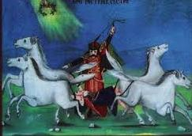

1 Osu se nebo zvezdama
Le ciel s'est parsemé d'étoiles
Druga Rukovet - 2ème guirlande : (00,00 - 00,41 )

Illustration d'une "Narodna pesma"
|
|
|
|

Ansambl Å umadija peva "Osu se nebo"
NOTES
|
[*] ÐбиÑка âÐаÑодна певанкаâ коÑÑ Ñе ÑаÑÑавио ÐÐ»Ð°Ð´Ð¸Ð¼Ð¸Ñ Ð . ÐоÑÑÐµÐ²Ð¸Ñ 1926. године пÑипиÑÑÑе Ð¾Ð²Ñ Ð¿ÐµÑÐ¼Ñ ÐÑÐºÑ ÐаÑаÑиÑÑ ÐºÐ¾Ñи Ñе jy веÑоваÑно Ñамо ÑакÑпио. Ðва пеÑма Ñе ÑоманÑиÑна и заÑÑÑаÑÑÑÑÑа по воÑи! СÑадо оваÑа Ñе ÑаÑпÑÑÑÑе по ÑавниÑи под небом пÑоÑаÑаним звездама. То Ñе заÑо ÑÑо млади паÑÑÐ¸Ñ ÑÐ¾Ñ Ñпава. Ðегова ÑеÑÑÑа жели да га пÑобÑди. ÐеÑак ÑвÑди да не може да ÑÑÑане ÑÐµÑ ÑÑ Ð³Ð° Ñ ÑÐ½Ñ Ð¿ÑогÑÑале две веÑÑиÑе коÑе ÑÑ Ð¼Ñ Ð¼Ð°Ñка и ÑеÑка. Oваквy пеÑмy би ÐигмÑнд ФÑоÑд волео! ÐÑва ÑÑÑоÑа ÑадÑжи неÑазÑмÑив одломак (баÑем на ÑÑпÑком): можда магиÑÐ½Ñ ÑоÑмÑÐ»Ñ ÐºÐ¾Ñа Ñе одÑÑÑна Ñ ÐокÑаÑÑевом âÐ ÑковеÑÑâ, али Ñе пÑеÑзеÑа Ñ ÑеÑÑÐµÐ½Ñ Ð²ÐµÑзиÑе коÑÑ Ð¿ÐµÐ²Ð° âШÑмадиÑаâ. |
[*] Le recueil de musique "Narodna Pevanka" composé par Vladimir R. DjordjeviÄ en 1926 attribue ce chant à Vuk KaradžiÄ qui en est sans doute le collecteur. Ce chant est romantique et effrayant à souhait: Un troupeau de moutons s'éparpille dans la plaine sous un ciel parsemé d'étoiles. C'est que le jeune berger dort toujours. Sa soeur veut le réveiller. Le jeune garçon prétend ne pouvoir se lever car il a été dévoré pendant son sommeil par deux sorcières qui ne sont autres que sa mère et sa tante. Voilà un chant qui aurait plu à Siegmund Freud! La première strophe comprend un passage incompréhensible (en serbe tout au moins): peut-être une formule magique qui est absente de la "Rukovet" de Mokranjac, mais reprise dans le refrain de,la version chantée par l'ensemble "Å umadija". |